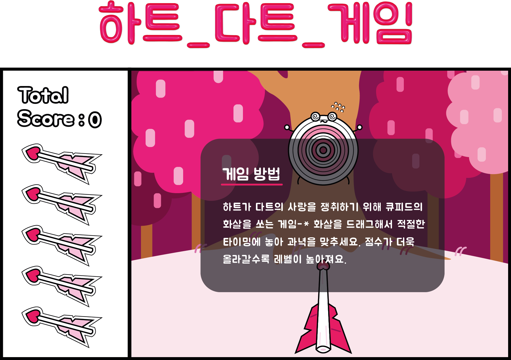

<idoctype html>

<head>
	<title>game_element</title>
	<link href='//spoqa.github.io/spoqa-han-sans/css/SpoqaHanSans-kr.css' rel='stylesheet' type='text/css'>

<header class="wrap">
  <nav id="nav">
    <div class="navwrap">
      <a href="https://leejuhyeon96.github.io/heart_dart_game/">
      </a>
    </div>
  </nav>
</header>

<body>
	
</body>
	<style>
	body{margin: 0 auto; width:600px;font-weight:300;margin-top:150px;}
	img{width:100%;}
	nav{width:150px;height:100px;float:right;margin-top:-130px;margin-right:-380px;}
	.balloon{
			width:50px; height:400px; 
			background-repeat:no-repeat;
			animation: bMove 8s linear;
		}

	@keyframes bMove{
		0%{ background-position: 0 200px; opacity:0;}
		20%{opacity:1;}
		80%{ opacity:1; }
		100%{ background-position:0 0;opacity:0;}
		}
	footer{text-align:center;font-weight: 100;color:black;font-size:12px;margin-top:100px;}
	html {font-family: 'Spoqa Han Sans', 'Sans-serif'; }
	</style>
</head>
<div id="time" style="font-size: 1em"></div>
<div id="displayMark" style="font-size: 1em">0</div>
<body>
	<script>
	var timeD = setInterval(checkTime,100);
	setTimeout(result,30000);
	var game = setInterval(attachBalloon,500);

	var a = 0;
	var mark = 0;
	function checkTime(){
		a = a + 1;
		console.log(a);
		time.innerHTML = "<br>연한 하트는 누르지마! "+ (299 - a) / 10 + "초 남았어요.";
	}

	function result(){
		alert("게임이 끝났습니다. 당신의 점수는 "+mark+"점입니다.");
		clearInterval(game);
		clearInterval(timeD);
	}

	function attachBalloon(){
		var t = document.createElement("div");
		t.setAttribute("class","balloon"); 
		t.style.position = "absolute"; 
		
		var color = randomBH(1,2);
		t.style.background = "url('h_" + color + ".png') no-repeat";
		
		t.style.backgroundSize = "70% auto";
		t.style.top = randomBH(0,window.innerHeight - 300) + "px";
		t.style.left = randomBH(0,window.innerWidth) + "px";
		t.addEventListener("animationend",remove);
		t.onclick = function(){
			markUp(this, color);
		}
		document.body.appendChild(t);		
	}
	
	function markUp(t, color)
	{
		var markText = "";
		if(color == 1){
			mark -= 300;
			markText = "에고고 " + mark+"점으로 줄었어~";
			displayMark.style.fontSize = "3em";
			displayMark.style.color = "hotpink";
		}else{
			mark += 100;
			markText = "잘했어! " + mark+"점이야!!";
			displayMark.style.fontSize = "1em";
			displayMark.style.color = "black";	
		}
		displayMark.innerHTML = markText;
		remove(t);
	}


	//지워주기 함수(이건 그냥 복붙 )	
	function remove(){
		var t = event.target; //이벤트의 타겟을 t로 지정하고.
		t.parentNode.removeChild(t); //그 엄마를 찾아서 자식중에 t를 지워라. 
	}

	//최소값과 최대값 사이의 임의의 숫자를 리턴하는 함수(복붙)
	function randomBH(min, max) {
  		min = Math.ceil(min);
  		max = Math.floor(max);
  		return Math.floor(Math.random() * (max - min + 1)) + min;
	}
	</script>
</body>
<footer>
	Digital publishing / HKNU design / Lee juhyeon<br><br><br>
</footer>
